Location and General Area
South Africa sits at the very southern tip of the African continent, where the Atlantic and Indian Oceans converge. It borders Namibia, Botswana, Zimbabwe, Mozambique, and Eswatini, and completely surrounds the landlocked kingdom of Lesotho.
Latitudinal Range
South Africa runs from roughly 22° South to 35° South latitude. It's entirely in the Southern Hemisphere, so the seasons are flipped — summer is in December and winter in June.
Time Periods
The San and Khoikhoi peoples have lived in this region for thousands of years. Some of the major historical turning points include:
- 1652 – Dutch settlement established at Cape Town by the Dutch East India Company.
- 1806 – Britain took permanent control of the Cape Colony.
- 1910 – Formation of the Union of South Africa under British rule.
- 1961 – South Africa became an independent republic.
- 1994 – End of apartheid and establishment of modern democratic South Africa under Nelson Mandela.
Maps and Cartography
South Africa has been mapped in a lot of different ways over the years — physical maps, political maps, population density, vegetation, you name it. A few examples are shown below.
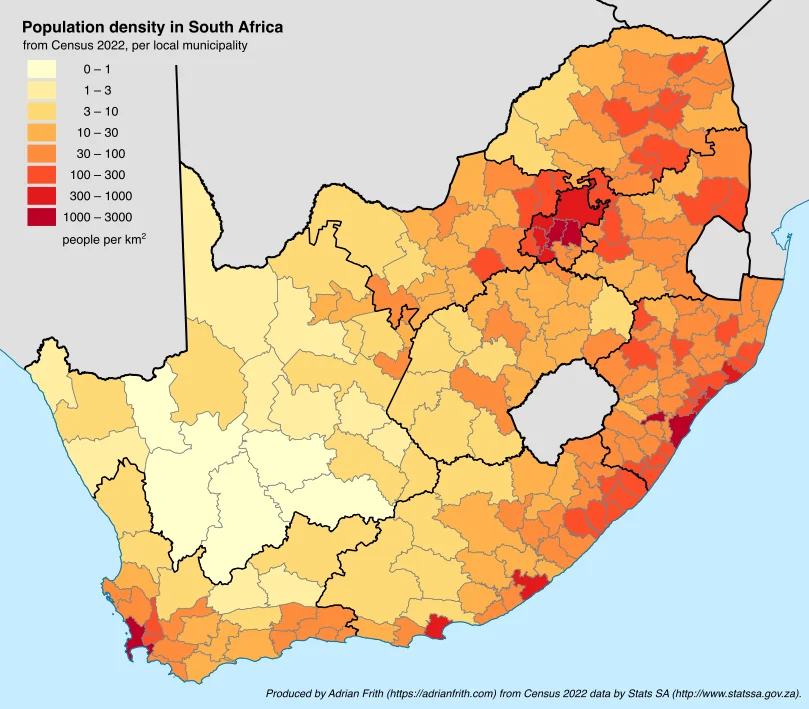
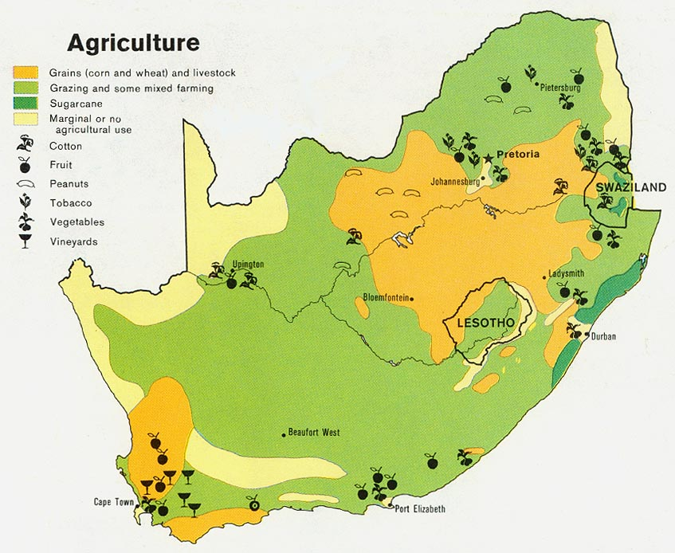
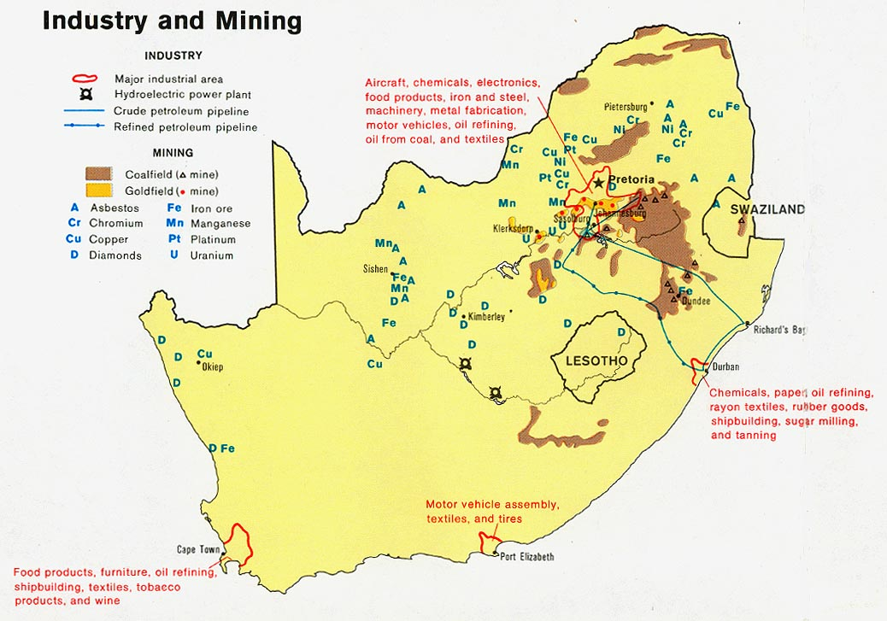
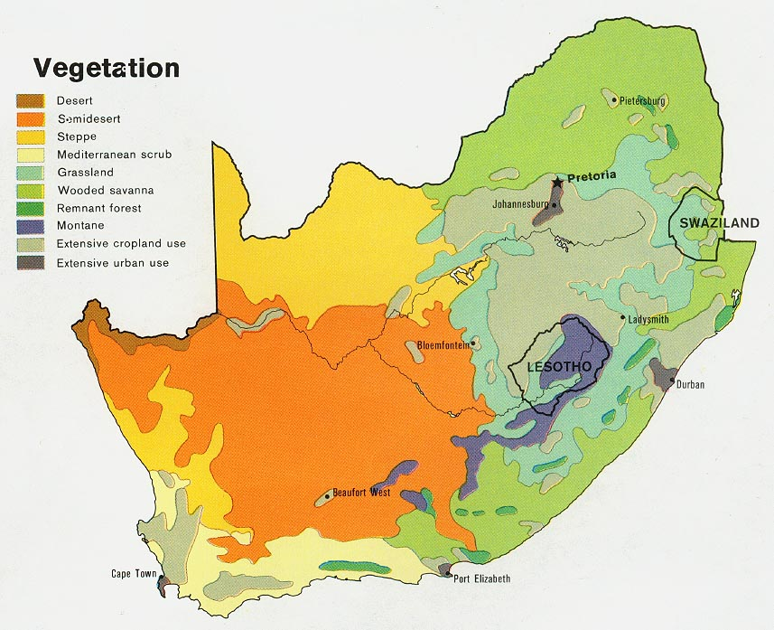
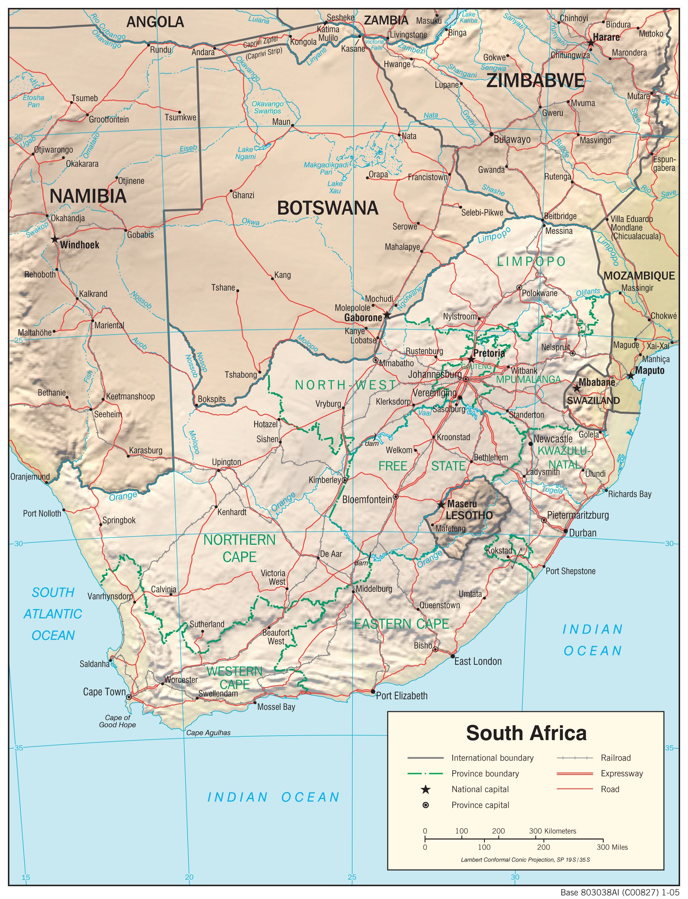
Famous Cartographers and Their Influence
Willem Janszoon Blaeu
Willem Blaeu was a Dutch cartographer in the early 1600s whose maps were some of the most accurate of his time and shaped how Europeans understood southern Africa.
Major accomplishments:
- Made highly detailed world maps and atlases that were widely used across Europe.
- Improved coastal mapping for explorers navigating around Africa.
- Helped chart the trade routes around the Cape of Good Hope.
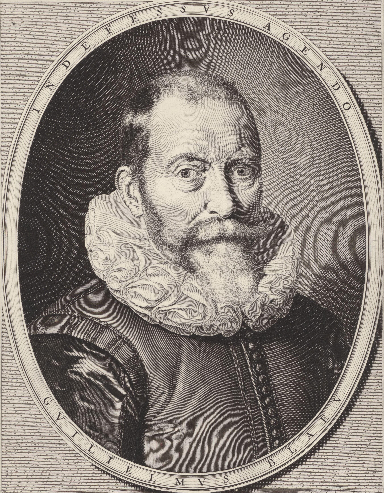
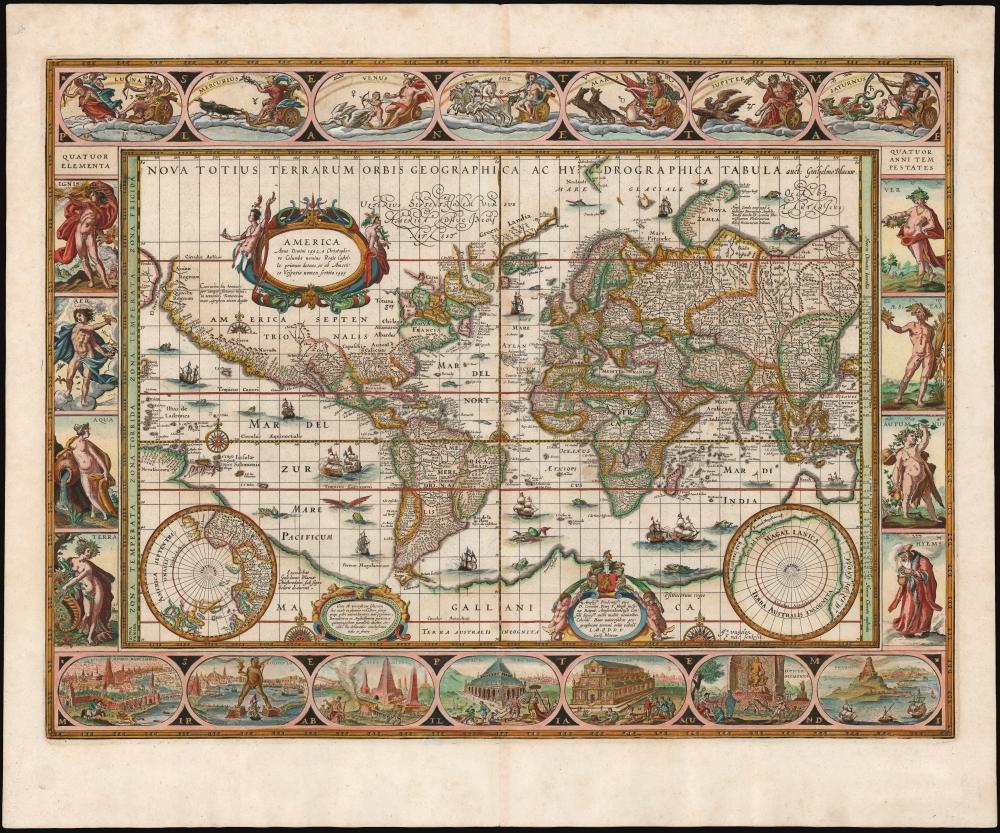
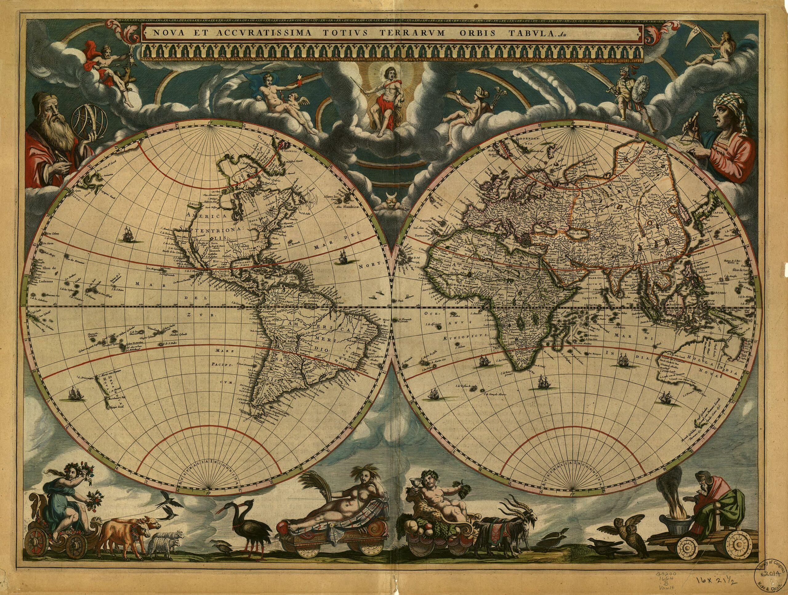
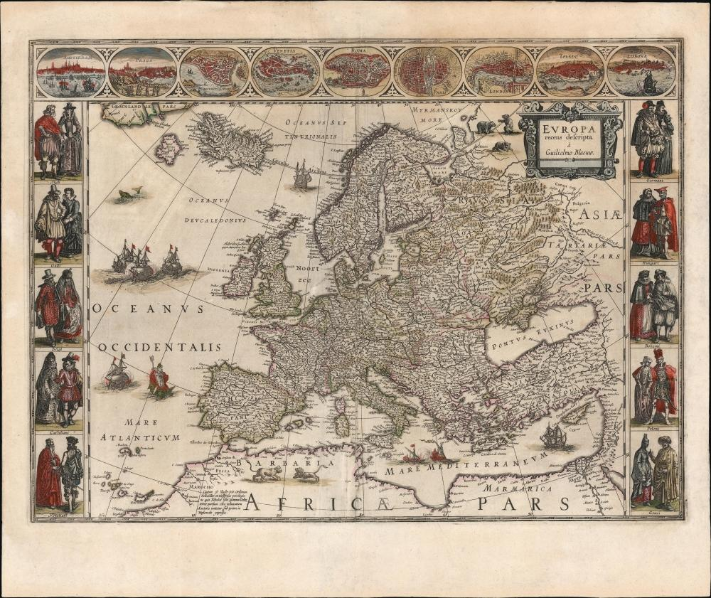
Jodocus Hondius
Jodocus Hondius was another influential Dutch cartographer who worked around the same period and helped refine European maps of Africa.
Major accomplishments:
- Published detailed atlases that sailors and explorers actually relied on.
- Updated maps of Africa using information from Portuguese and Dutch voyages.
- Played a big role in spreading geographic knowledge across Europe.
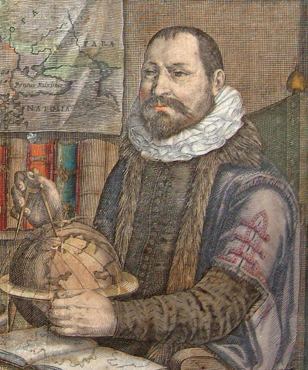
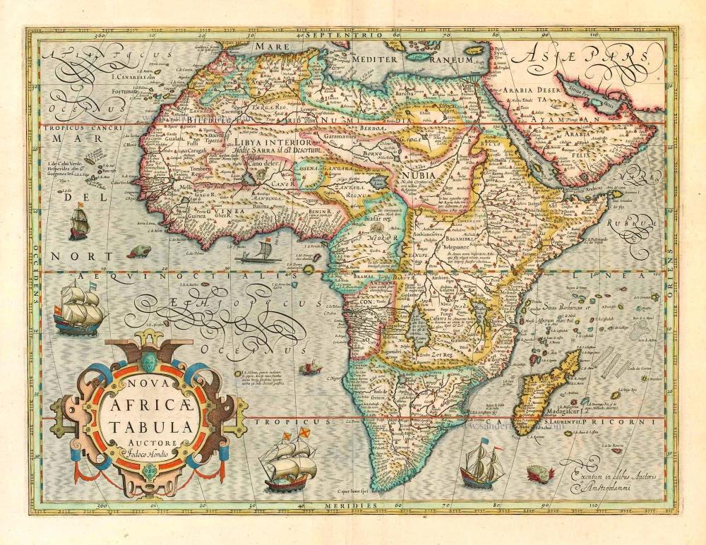
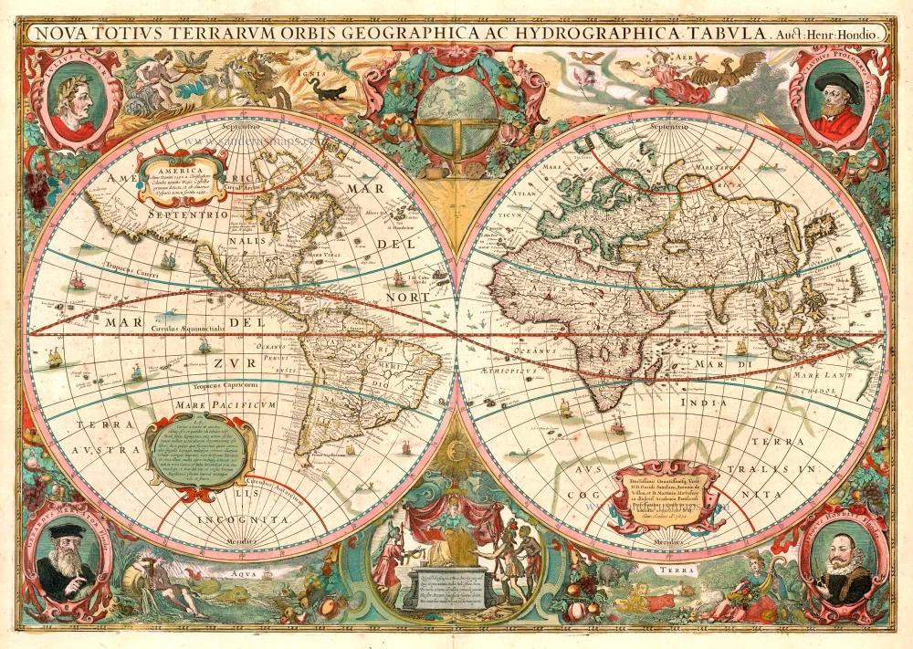
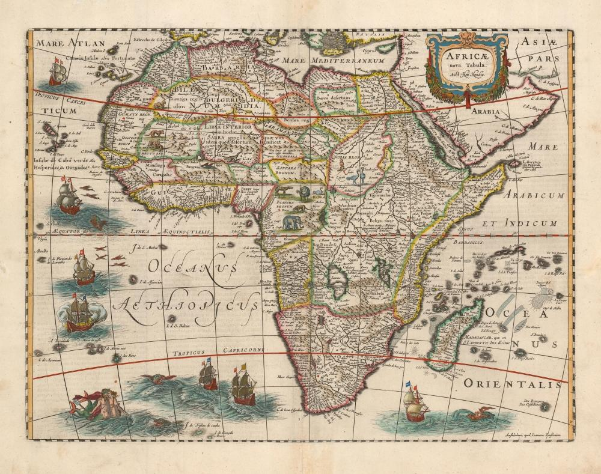
South African Mapping Today
Modern mapping in South Africa is handled by the Chief Directorate: National Geo-spatial Information, which produces the official topographic and geographic maps used across the country.